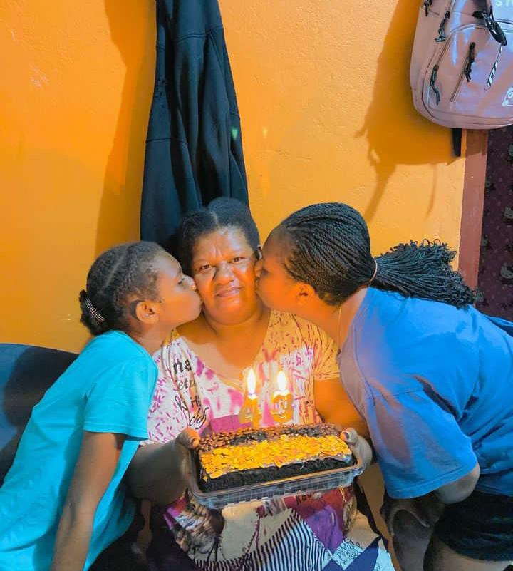
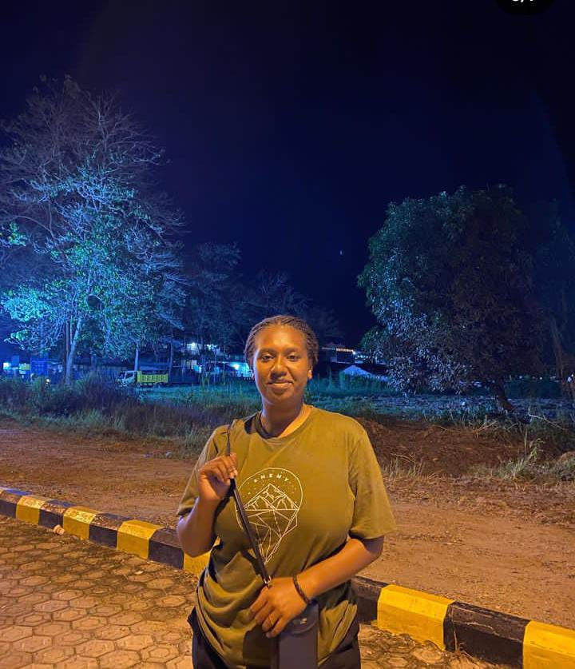

cerita saya
saya akan bagikan cerita tentang kenangan saya
Bagikan sekarangTentang Dia

hari Ulang Tahun Ibu
ini adalah Foto Saya bersama Ibu Saya,saat Ibu saya berulang tahun, bagiku Ibuku Adalah Yang terbaik.

cantik
foto ini dikirim untuk saya dan hanya untuk ditanyakan pada saya kalau dia cantik to, memang dia cantik tapi dan manis tapi saat itu saya malu meberitahunya kalau dia itu cantik, dia itu berharga bagiku!!.
cerita tentangnya
oranya nyebelin, selelu cari masalah saat bertemu, pada saat saya bertemu denganya pasti saja dia cari cara agar kita bertengkar, tapi jujur dia terbaik.
kesehariharianya
ceritanya Foto ini saya mengambinya diam-diam tanpa dia mengetahuinya